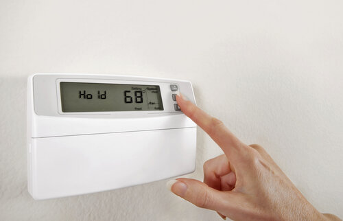
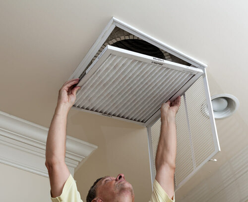
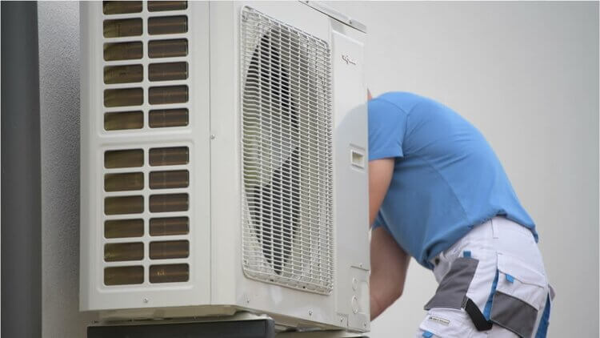
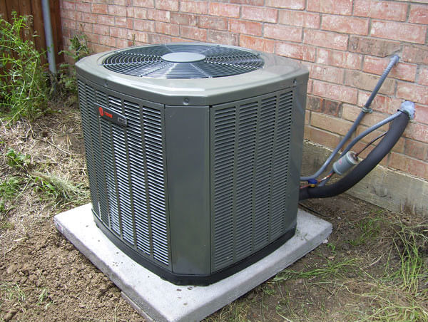

(XXX) XXX-XXXX
Air Conditioner Services
Repair services
There are several things that you can check before you call us. If none of these solve the issue then please call us and we will schudule an appointment as soon as possible.
Thermostat
● Check to be sure the batteries are still good.
● Make sure our thermostat is set to cool.
● If it is programable then ensure it is set to the correct time and day.
● None of this works the air conditioner could be without power.
Buy a New Air Filter
Another issue could be that the air filter is dirty, this is actually more common than you would think. A dirty air filter can cause many problems. It restricts air from flowing, preventing the system from cool down your house which will in turn cause your air conditioner to overwork and increasing your heating bill.
On the other hand, it is important to have a filter. It not only keeps the air clean but also keeps the inside of the blower housing clean from dust. Dust in a blower housing could lead to future problem and cause more issues to the preformance of the air. The optimal time for replacing your air filter is at least once every three months.
Look at the Condensate Pan/Pump
All air conditioner produce condensation when operating. The AC will have a condensate pan and drain. The drain is usually a small PVC pipe. Find the drain and make sure that it is not clogged.
If doing all these things don't help fix the issue then please call us to set an appointment.
If for what ever reason we can't repair your air conditioner or if it is simply to old and needs to be replaced then we also offer installation services to get your house cooled again.
Maintenance
What are the benifets to getting your air conditioner maintenanced?
Getting your system maintenanced can be beneficial for several reason:
It will reduce the chance for future service calls, will increase efficiency not only keeping your house cool but also reducing your bill. Often preventing is less expensive than repairing.
What do we offer as maintenance?
● We will check the motor, electrical components, and refrigerate.
● Make sure everything is in good working condition.
● Clean both the indoor and outdoor unit of our AC.
● If we find any problems then we will inform you on any actions that need to be taken to keep your system working.
We also offer a yearly membership, contact us now to learn more.
Installation
Why get a replacement?
1. The air conditioner may be old and is currently running the risk of failure, replace it now could save you a lot of hassle for when it does fail on you.
2. Old air conditioners are less efficient with cooling down your house which in turns increases the cost to run it.
3. Has trouble with cooling down the house.
4. If you are need to do repeated repairs you should consider getting a replacement.
